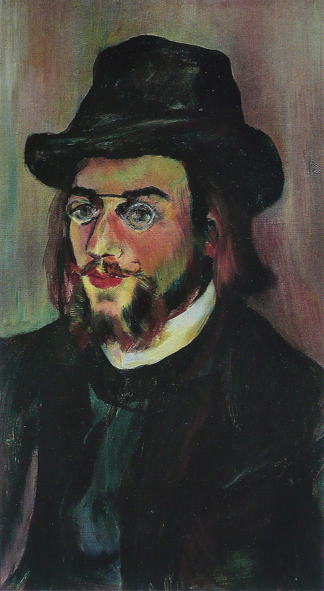
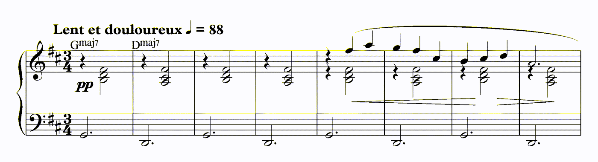

박씨 렌더링 · 제 1 곡
Erik Satie — Trois Gymnopédies, No. 1 (1888)
Lent et douloureux — 느리고, 아프게

원곡 연주: 로빈 알치아토레 (퍼블릭 도메인) · 재현: 채보한 MIDI를 Salamander Grand Piano(야마하 C7 실녹음, CC BY 3.0)로 렌더
두 번째 연주는 첫 번째를 녹음한 것이 아니다. 음 하나하나를 받아 적어, 다시 친 것이다. 그래서 조성을 바꾸고, 순서를 바꾸고, 다른 악기로 옮길 수 있다 — 원본 녹음에는 없는 자유다.
시간은 위 음원 기준. 0:00–3:03이 원곡 연주, 3:04–3:05가 침묵, 3:06–6:11이 재현. 아래 시각은 전부 원본 파형과 채보된 음표에서 실제로 잰 값이다 — 기억이나 추측이 아니다.
연주자가 아직 아무것도 치지 않는다. 파형이 0인 구간이 2.2초 있다. 이 침묵도 곡의 일부다. 사티는 앞에 아무 표시도 남기지 않았다.
가장 낮은 음이 G2. 여기서 곡이 시작된다. D장조인데 첫 저음이 으뜸음(D)이 아니라 4도(G)라는 게 이미 이 곡의 성격이다 — 집에 바로 들어가지 않고 문 앞에 선다.
가장 낮은 음이 G2와 D2를 약 2.45초 간격으로 번갈아 오간다. 오른손은 그 위에서 한 음씩 떨어진다. 이 느린 시소가 곡의 바닥이고, 이 곡을 BGM으로 쓸 수 있게 만드는 바로 그 장치다 — 아무리 반복해도 질리지 않는다.
시소가 멈춘다. 저음이 F#2로 내려가고, 곧 B1 — 이 채보에서 나온 곡 전체의 가장 낮은 음이다 — 을 거쳐 E2로 간다. 처음으로 곡이 어두워지는 자리.
E2 – F#2 – B1 – E2. 저음이 13.2초 동안 D2로 돌아오지 않는다. 곡의 절반을 가르는 자리다. 이 대목이 없으면 짐노페디는 그냥 예쁜 자장가지만, 이 13초가 있어서 생각에 잠긴 음악이 된다.
연주자가 멈춘다. 파형이 정확히 0이 되는 구간이 1.8초. 악보에 이만큼의 쉼표는 없다 — 연주자가 만든 침묵이다.
시소가 그대로 돌아온다. 처음과 같은 G2, 같은 2.45초 간격.
0:38의 그 깨짐이 정확히 87.2초 뒤 똑같은 모양으로 온다 (F#2 → B1 → E2). 절반을 대조해보면 음의 72.6%가 0.35초 안에서 같은 자리에 있다 (시각 오차 중앙값 0.17초). 같은 음악이 두 번 온다는 뜻이고, 두 번째는 처음보다 조용히 지나간다.
저음이 E2에 붙어 14.6초 동안 움직이지 않는다. 곡에서 가장 긴 어둠이다. 이 위에서 오른손은 F5까지 올라간다 — 바닥은 가라앉고 선율만 뜬다.
A2 위에 A·C·E·C. 저음이 처음으로 으뜸음도 4도도 아닌 5도로 간다. D로 가기 직전의 한 칸 — 그래서 이 화음이 결정적이다.
D2 + D·F·A·D. 2분 55초 만에 처음으로 완전한 으뜸화음이 온다. 곡 내내 피했던 집에 마지막 한 번 들어가고, 4.3초 여운을 남기고 끝난다.
2초의 완전한 침묵. 그 뒤부터는 같은 곡을 우리가 다시 연주한 것이다 — 원본 녹음을 이어 붙인 게 아니라, 음 하나하나를 받아 적어 다른 피아노로 친 것.
채보한 472음을 야마하 C7 실녹음(살라만데르)으로 다시 쳤다. 첫 음 G2, 그 다음 D2 — 시각까지 원곡과 같다. 채보가 음높이만이 아니라 시간도 옮겼다는 뜻이다.
원곡 1:28의 그 침묵이 재현에서도 같은 자리에 1.8초 있다. 연주자의 호흡까지 그대로 옮겨졌다는 증거다. 이게 "웨이브 파일을 그냥 튼 것"과 "받아 적어 다시 친 것"의 차이다.
E2가 다시 14.6초. 길이가 원곡과 같다 — 템포도 함께 옮겨졌다. 다른 건 공간뿐이다: 잔향 0.85와 190ms 딜레이.
D2 + D·F·A·D. 같은 화음인데 잔향이 붙어 다르게 들린다. 원곡은 방 안에서, 재현은 더 큰 빈 방에서.
총 371.6초. 원곡 183.6초 + 침묵 2초 + 재현 186.0초.
에릭 사티는 1887년 파리 외곽 아르퀘이유를 떠나 몽마르트르 언덕의 낡은 방으로 옮겼다. 서른도 되기 전, 음악원은 그를 재능 없는 학생으로 취급했고 그는 학교를 그만뒀다. 그 방에서 1888년, 세 개의 짧은 피아노 곡이 나왔다.
제목 짐노페디(Gymnopédie)는 고대 그리스 스파르타의 축제 김노파이디아(γυμνοπαιδία, gymnopaedia) 에서 왔다. gymnos(벌거벗은)와 pais(소년) — 벌거벗은 젊은이들이 합창하고 춤추던 제전이다. 사티는 이 말을 친구 콩타민 드 라투르가 쓴 시 〈고대인들(Les Antiques)〉에서 주워 담았다는 것이 정설이다. 시에는 "짐노페디"와 "짐노페디스트"라는 말이 나온다.
1888년 파리에서는 에펠탑을 세우고 있었다. 사티가 3분짜리 피아노 곡을 쓰는 동안 도시는 300미터 쇠기둥을 하늘로 올리고 있었고 — 이듬해 1889년 만국박람회에서 그것이 공개됐다.
곡은 20년 넘게 거의 잊혀 있었다. 판을 뒤집은 것은 모리스 라벨이었다. 1911년 라벨이 짐노페디를 연주회에 올리면서 사티는 갑자기 유명해졌다. 그때 사티는 45세였고, 이후 14년을 "갑자기 유명해진 사람"으로 살다 1925년 죽었다. 드뷔시는 1897년 제1번과 제3번을 관현악으로 편곡했다.
사티가 남긴 말 중 가장 유명한 것 — 음악은 가구처럼 있어야 한다. 사람이 대화할 때 배경으로 깔리되, 알아채지 못하게. musique d'ameublement (가구 음악), 1917
이 말이 나온 게 1917년이니, 짐노페디(1888)보다 29년 뒤다. 그러나 짐노페디는 이미 그 문법으로 쓰여 있었다 — 지금 우리가 BGM을 만들며 "알아채지 못하게, 감정만 실어야 한다"고 말하는 그 태도를, 사티는 그 말이 나오기 29년 전에 음으로 해놓았다.
이 곡은 플루치크(Robert Plutchik)의 감정 수레바퀴에서 슬픔(Sadness) 축의 가장 옅은 칸에 놓인다. 강도 3단 중 맨 아래다.
같은 축의 위 칸은 슬픔(sadness), 꼭대기는 비통(grief)이다. 이 곡은 맨 아래 칸에 있다 — 울지 않고, 생각한다.
| 칸 | 문법 | 예 |
|---|---|---|
| 생각에 잠김 | 느린 아르페지오 · 하강 · 긴 페달 · 고른 세기 | 이 곡 |
| 슬픔 | 반복 저음 · 하강 · 감5도 · 고른 세기 | 쇼팽 〈빗방울 전주곡〉 |
| 비통 | 화음 덩어리 · 반음계 하강 · 팽창 후 소멸 | 그리그 〈오제의 죽음〉 |
이 분류는 플루치크의 8감정 골격에 음악 문법을 붙인 우리 기준표에 따른 것이다. 심리학적 진단이 아니라 소재 고르는 도구다 — 자세한 것은 수첩 123 참조.
짐노페디가 특별한 이유는 아무것도 하지 않기 때문이다. 1888년 유럽 음악은 바그너의 거대한 화성과 리스트의 기교로 가고 있었다. 사티는 그 반대편에 세 쪽짜리 악보를 놓았다 — 화성은 단순하고, 기교는 없고, 클라이맥스도 없다.
존 케이지는 사티에 빠져 1963년 사티의 〈베사시옹(Vexations)〉을 18시간 동안 840번 연주하는 공연을 조직했다. 주위 음악(ambient) 계보 — 브라이언 이노에서 출발해 오늘의 BGM 산업까지 — 의 할아버지 격이 짐노페디다. 영화·광고·다큐멘터리에 이 곡이 끝없이 깔리는 것은, 곡이 비어 있어서다.
이 곡에는 작품번호(Opus)가 없다. 사티는 거의 작품번호를 쓰지 않았다.
그래서 짐노페디는 "Op. 몇"으로 부를 수 없고, 그냥
Gymnopédie No. 1 이다. 남들이 Op. 28 No. 15처럼
줄줄 외울 때, 사티는 번호가 없다는 것으로 구별된다.
| 약자 | 원어 | 뜻 · 누가 |
|---|---|---|
Op. | Opus (라틴) | "작품". 작곡가가 생전에 붙인 출판 순서 |
WoO | Werk ohne Opuszahl (독일어) | "작품번호 없는 작품". 베토벤 연구에서 씀 |
K. / KV | Köchel-Verzeichnis (독일어) | 쾨헬 목록. 모차르트 전곡 번호 |
BWV | Bach-Werke-Verzeichnis (독일어) | 바흐 작품 목록. 1950년 슈말라이더 편 |
D. | Deutsch (독일어) | 도이치 목록. 슈베르트 전곡 번호 |
Hob. | Hoboken (네덜란드어) | 호보켄 목록. 하이든 |
RV | Ryom-Verzeichnis (독일어) | 뤼옴 목록. 비발디 |
L. | Longo (이탈리아어) | 롱고 목록. 스카를라티 건반 소나타 |
S. | Searle (영어) | 설 목록. 리스트 |
규칙: 약자는 작곡가마다 다른 사람 이름이다. 외우는 게 아니라 "누가 만든 목록인지"를 아는 것이고, 그게 취향처럼 보인다.
사티는 악보 여백에 프랑스어로 남다른 지시를 적었다. 이 곡의 Lent et douloureux(느리고 아프게)가 그 시작이다.
| 원어 | 뜻 | 출처 |
|---|---|---|
| Lent et douloureux | 느리고 아프게 | 짐노페디 1번 |
| Lent et triste | 느리고 슬프게 | 짐노페디 2번 |
| Lent et grave | 느리고 장중하게 | 짐노페디 3번 |
| Du bout de la pensée | 생각 끝에서 | 다른 작품 |
| Postulez en vous-même | 네 안에서 따져보라 | 다른 작품 |
| Munissez-vous de clairvoyance | 통찰을 갖추라 | 다른 작품 |
| Corpulentus | — | 사티가 만든 가짜 라틴어 |
마지막 줄이 핵심이다. 사티는 없는 라틴어 단어를 만들어 지시어로 썼다. 진지한 척하는 음악계를 비웃은 것이고, 그 농담을 진짜로 받아 적은 연주자가 100년 넘게 속출했다.

악보를 보면 음이 거의 없다. 마디당 두세 개다. 1888년 기준으로 이건 게으름이 아니라 선택이었고, 그 선택이 130년 뒤 BGM 산업의 문법이 됐다.
나중에 그는 똑같은 회색 벨벳 양복 7벌을 돌려 입어 "벨벳 신사(le Velours Gentleman)"라 불렸고, 스스로 교회를 세워 자신을 그 교회의 유일한 신자로 임명했다. 우산을 들고 다니며 망치를 넣어두기도 했다. 짐노페디를 쓴 사람과 같은 사람이다.